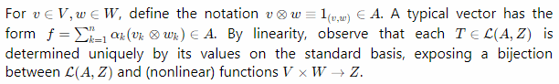

Sneak Peek (10 August 2020)

Excellent Math Support
Inline Math
Display Math
Core Principles
-
Edit Locally and Offline: Use your own cloud solution like git, Syncthing, Google Drive, etc.
-
Works with Your Documents: Noteworthy can read your existing Markdown and plain text documents, no problem!
-
Out of Your Way: Noteworthy doesn’t impose its own document format on you. Write your notes in Markdown, like you always have, incorporating as few or as many Noteworthy features as you like.
-
Free as in Beer: Use the offline version of Noteworthy free of charge, forever.
-
Free as in Speech: Noteworthy is open-source and released under an AGPL-3.0 license.
Goals
-
Competition: Noteworthy is a direct competitor to paid note-taking software like Typora and Notion, as well as to closed-source editors like Obsidian, Notable, and MarkText.
-
Modularity & Code Re-use: Built using TypeScript with re-use in mind. Don’t like Noteworthy but don’t want to start from scratch on your own editor? Strip it down for parts! Re-use the file explorer, the cross-referencing plugin, and all the boilerplate that’s distracting you from implementing new features.
-
Alternatively, check out [custom editors] in vs-code !
-
Non-Goals
-
Not a Roam-like: The Roam Research editor has inspired many other projects, including Athens Research, thinktool, and RemNote. The way I see it, Roam-like editing asks, “how can I turn this graph into a text editor?”, while projects like Noteworthy and Obsidian ask, “how can I turn this text editor into a graph?”. Noteworthy doesn't impose any specific structure on your documents beyond basic Markdown.
Features
-
First-class Math: Create and edit math as part of the text itself, using KaTeX.
-
Markdown-ish: Noteworthy can read and understand any Markdown file, but there are some key differences. More on this below.
-
Works with Your Documents: Noteworthy can read your existing Markdown and plain text documents, no problem!
-
Bidirectional Links: Build your own personal wiki!
-
Everything is a Tag: File names, URLs, citations, and wikilinks are all treated as tags!
-
Extensive Tag System: Easily create tags and organize them however you like. Organize tags into hierarchies, or don’t—it’s your call.
-
Knowledge Graph: Discover connections between your documents.
-
Document Schema: Define a pre-set structure for certain types of documents. Display and edit document metadata as part of the text itself.
-
Custom Themes: Use CSS themes to customize *every aspect *of your documents.
-
Citations: Easily import / export BibTeX citations.
-
Export: Export HTML / LaTeX / plain text directly, or connect to pandoc for even more export formats.
Markdown++ Document Format
-
Noteworthy can read and understand any document adhering to CommonMark spec, but may interpret some symbols differently.
-
Noteworthy-flavored Markdown attempts to be more expressive by eliminating redundancies from CommonMark:
-
For example, Noteworthy distinguishes between
*italic*and_underlined_text.
-
-
When importing a file, Noteworthy preserves the content of your document, but not necessarily your original expression of that content when you save.
-
For example, CommonMark defines more than one way to write headings. When saving, Noteworthy only uses the
# headingsyntax.
-
-
Further, some features of Noteworthy rely on non-standard extensions to the Markdown syntax which are not part of CommonMark
Not Planned, but Maybe?
-
Encrypted Document Format: Noteworthy will always respect your privacy and access your files responsibly. However, documents created by Noteworthy are stored in plain text, and there is no way to prevent other programs from reading them.
-
In the future, may add the option to encrypt with gpg , similar to org-roam.
-
Monetization Promise
-
There are currently no plans to monetize Noteworthy, but who knows what the future will hold? Often, software that begins as an open-source side project is later closed-off and placed behind a paywall (even worse, a subscription model!).
-
However, doing so would directly conflict with the core principles of this project. Noteworthy would not have been possible without the help of outstanding open-source projects like ProseMirror, and I feel a responsibility to keep Noteworthy freely available. The desktop version of Noteworthy will always be free and open source.
-
If, in the future, Noteworthy becomes more than a side project, I can imagine a paid version that allows for features like cloud sync and collaborative editing. Since Noteworthy works with your local files, you’ll always be free to use your own cloud storage solution like SyncThing or Google Drive .
Alternatives to Noteworthy
-
Want similar features? Try Obsidian, Zettlr, Notable, or Typora.
-
Want online storage and collaborative editing? Try Notion.
-
Want interconnectivity to the extreme? Use Athens-research, thinktool, RemNote for free, or pay for Roam.
-
Need help remembering what you learn? Try RemNotes !
-
Sick of Electron? Try the Foam Research extension for vs-code.
-
Emacs User? Try org-roam .